How to Recognize It
The rectangular holes in the front corners of the metal step and the rectangular plastic-block jaw mounts identify a Type 9.
See the gallery of detail photos below. The Workmate 79-001 Type Study spreadsheet shows how all ten Types compare.
Black & Decker Workmate 79-001 Type 9
The Workmate 79-001 ended its eight-year run with the Type 9. The Type 9 continued the pattern of reducing the number of parts in the Workmate, with a fairly significant redesign to the folding mechanism that would continue to be used in later models. The Workmate 300 (79-033) that replaced the 79-001 in the spring of 1982 is extremely similar to the 79-001 Type 9.
The Type 9 is the least common Type manufactured at the Brockville factory, which is consistent with its short production period.
Notable Characteristics
Component Changes During Production
I have seen a couple of Type 9's with holes in the footrest for holding tools, a feature of the Workmate 79-033 (or 300) that was the successor to the Type 9. Other than that, no parts were changed during production.
The Type 9 is the least common Type manufactured at the Brockville factory, which is consistent with its short production period.
Notable Characteristics
- The major change in the Type 9 is a revision to the folding and latching mechanism that had been in use since the Type 1. The new design employs two "pinball" buttons on the outside of the upper frame pieces that you press to release the latches. In a clever design, these buttons are used both to raise the top from the lowered position and to lower it from the raised position.
- When you want to release the top to fold the Workmate down, instead of pulling two levers as on the earlier Types, you press the new buttons, in a motion somewhat similar to playing a pinball machine. Similarly, pressing on those same buttons in the folded position releases the clips that keep the Workmate folded, allowing you to raise it to full height. Using the same buttons for both folding and unfolding makes those operations more intuitive, somewhat of a return to the operation of the Type E.
- The buttons incorporate a springy "finger" to hold them in position. Since the finger is made of the same plastic as the button and it flexes every time you press the button, it could be a weak point.
- To make this mechanism possible, the clips were changed (for the second time) and moved two inches forward to align with the buttons when the Workmate is folded. The clips now engage at a spot farther forward on the lower frame, so rectangular holes were added to the front corners of the step to allow clearance for them.
- A couple of bent tabs were incorporated into the bottom edge of the upper frame pieces, apparently to help align them with the lower frame pieces when the Workmate is folded. I haven't been able to tell that they do very much.
- The side stays were shortened about 2-1/2", with their lower pivot point moved about 2-1/2" higher and about 1-1/2" forward. The stays now have a slight bend near the middle.
- The steel U-brackets used to attach the jaws were replaced with solid black plastic blocks similar to the aluminum ones on the Type 1, 3, and 5. On the Type 9, only one bolt is used at each end of each jaw, and the bolts are inserted through a 7/8" hole from the top, screwing into the blocks below. There is a second 5/16" hole in the jaw for a short alignment peg on the top of the mounting block.
- The jaws on the Type 9 are veneered MDF.
- The Brockville production code is stamped on the top or bottom surface of the metal step rather than on the bottom of the vise jaws.
- The number of United States patents on the CAUTION label on the jaws increased from two to fourteen!
Component Changes During Production
I have seen a couple of Type 9's with holes in the footrest for holding tools, a feature of the Workmate 79-033 (or 300) that was the successor to the Type 9. Other than that, no parts were changed during production.
Click on any image below to open the gallery of full-screen images.


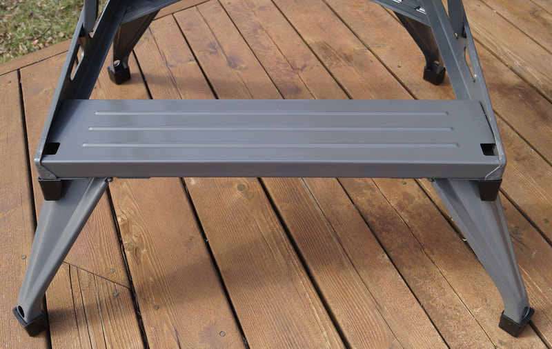

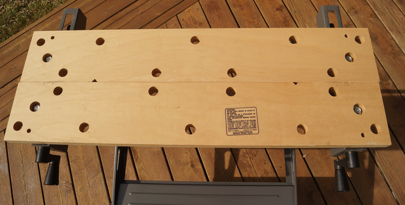

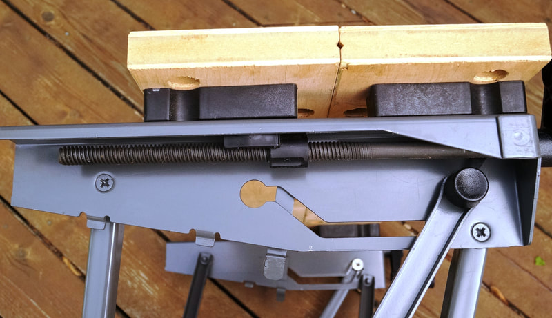

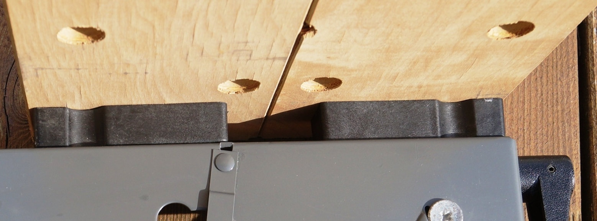

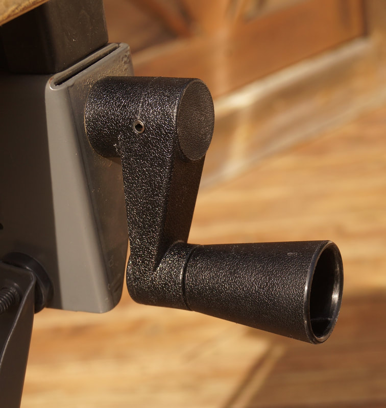

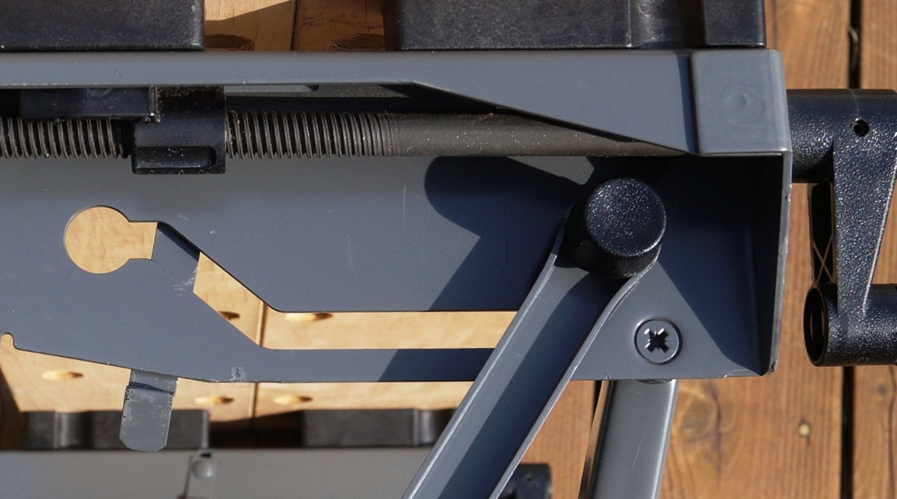

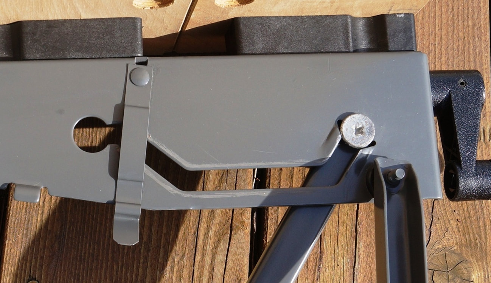

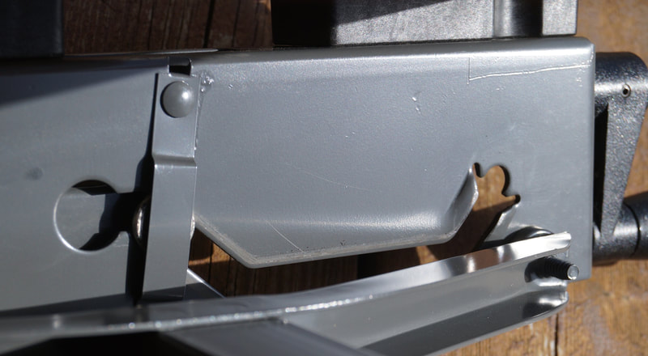

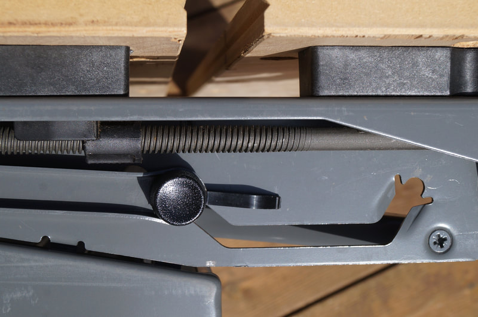

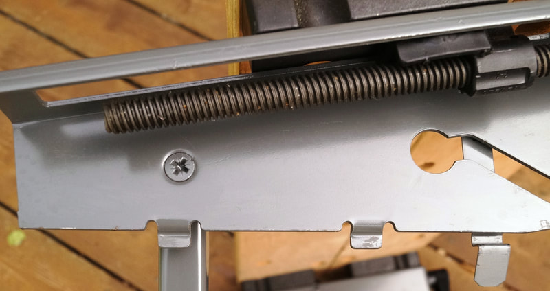

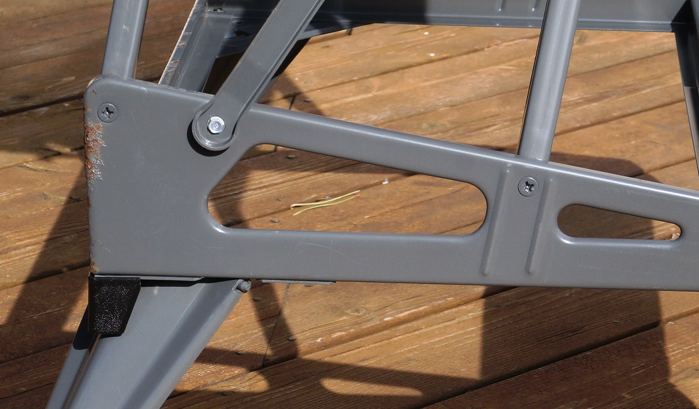

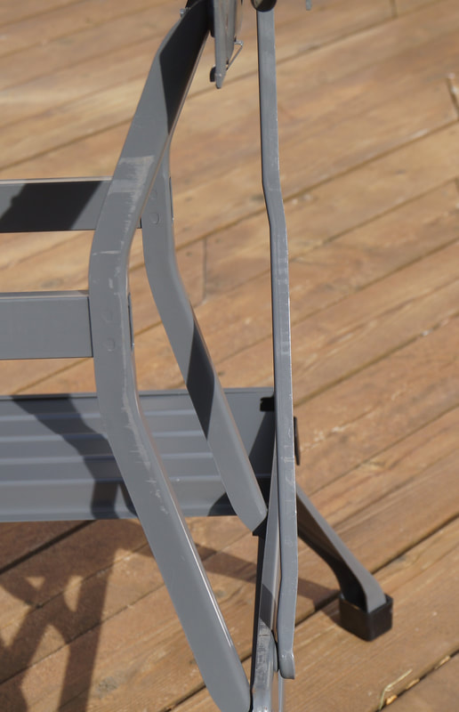


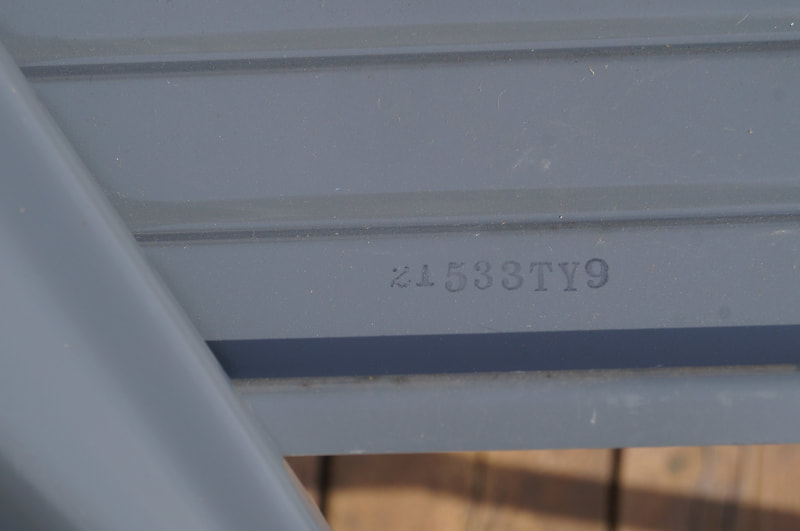


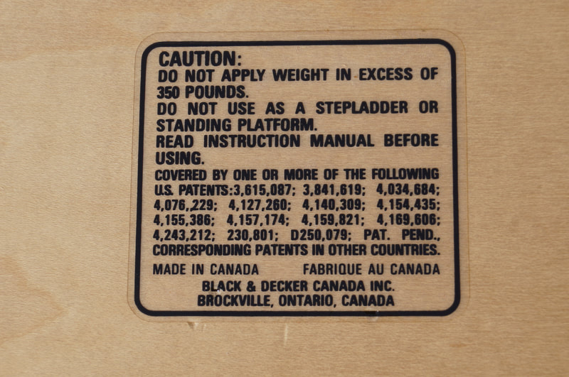

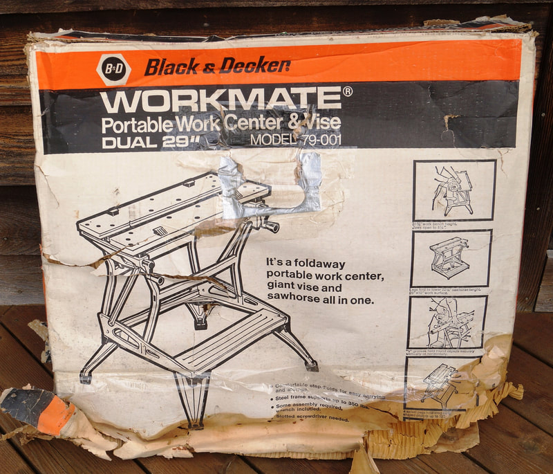

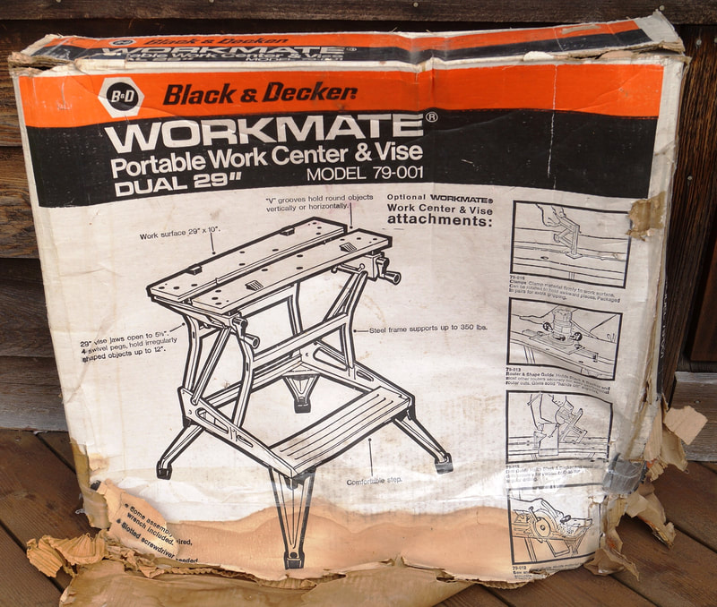

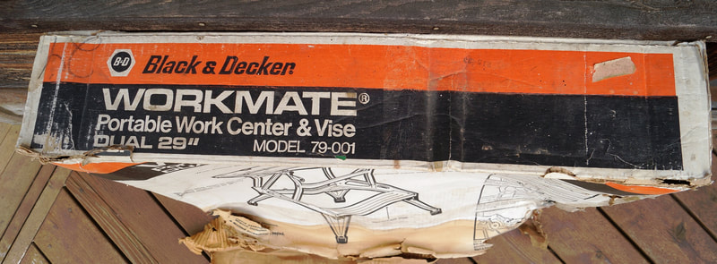